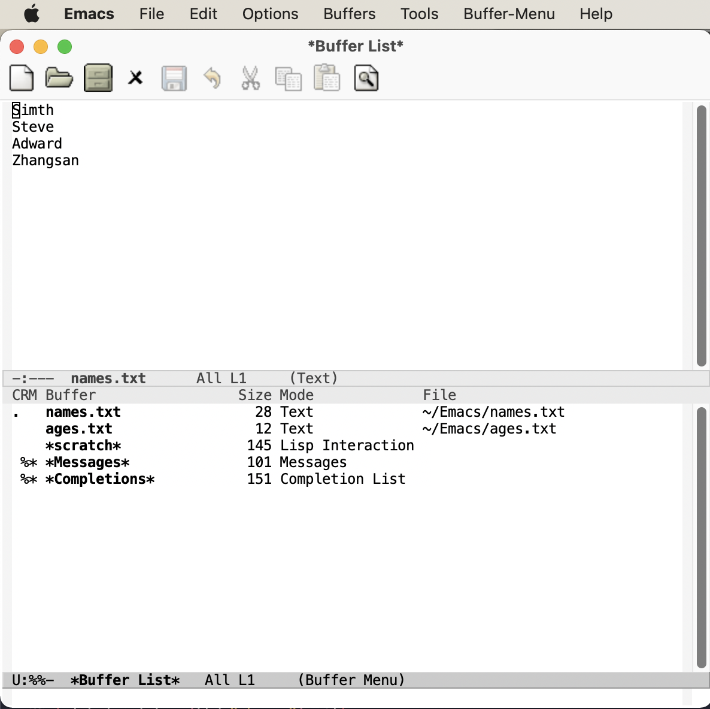

多文件与模式
本篇介绍 Emacs 的界面术语、如何管理多个文件，如何分割显示等等。同样的，本文更多介绍概念，具体操作起来是有插件可以方便我们进行操作的。结尾的附录包含了本文涉及的所有快捷键。
初识界面
首先我们需要了解 Emacs 界面的一些术语。了解术语更多是为了在网上搜资料、看文档、配置时能够更准确地抓住关键。
-
Frame：如果用图形界面打开 Emacs 程序，那么一整个程序窗口被称为 Frame，如果打开了多个窗口就有多个 Frame；如果在终端内打开 Emacs，那么 Emacs 所占据的整个终端的界面被称为 Frame。上图都是一个 Frame。
-
Menu bar：即菜单栏，在 Frame 的最上方。默认包括了 File、Edit……等等下拉菜单。在终端中不能用鼠标时，需要用
menu-bar-open命令打开，对应快捷键<f10>。此外还有一个M-`键（对应命令tmm-menu）可以从下方展开互动界面打开菜单。 -
Tool bar：即工具栏。只在图形界面时可以使用，就是上面第二张图中那一些图标。由于它十分丑陋且功能又很基本，在上一篇教程中已完全涉及，所以正常笔者会关掉工具栏——在配置文件中加入代码
(tool-bar-mode -1)（如何编辑配置文件将在后续教程中详细介绍）。 -
Echo Area：整个界面下方的一行就是“回显区”，用以打印各种简短的信息。例如上面第二张图就打印了如果你想获取帮助就按
C-h C-a，上一篇教程中也提及了这一命令。
-
Window：Tool bar 以下（如果有）、Echo area 以上这一整个区域，就是 Window，即窗口。 可以看到 Emacs 的窗口和我们日常使用电脑所说的窗口不是一个东西，一定要注意，不然在配置、调用命令或者在网上搜索信息时会搞错。我们日常称为窗口的在 Emacs 中被称为 Frame，而 Frame 内的核心区域才被称为 Window。
-
Mode line：Window 最下方灰色的一行即为“模式行”（即显示 -UUU:%%--F1 GNU Emacs 的部分）。这里会显示当前 Buffer 的一些信息（什么是 Buffer 见下文）大概包括了文件编码、是否修改、当前 Buffer 名、光标所在位置占全文百分比、行号（L1 表示第一行）等等。它的内容可以自定义，也可以使用 smart-mode-line 插件进行管理，后文将会更多介绍。
-
Scroll bar：图形界面时 Window 的最右侧有一滚动条。事实上在 Emacs 中根本不需要用滚动条，所以笔者也直接关闭了它，让界面更清爽，在配置中加入
(when (display-graphic-p) (toggle-scroll-bar -1))表示在是用图形界面时关闭滚动条。 -
Cursor：光标。光标是一个 1 字符宽的方块，但其真正表达的位置是其左侧的长边，即两字符之间。文档中有一些关于其显示效果的设置，例如可以换成大家日常更习惯的小竖线（bar），但其实笔者觉得还是方块（box）比较显眼，看习惯也挺好。
-
Point：光标所在的位置称为 Point。区别于光标的是，光标有且只有一个，但 Point 是针对 Buffer 的，每个 Buffer 都有一个 Point。许多命令的触发都要读取 Point 信息。
文件与 Buffer
前面多次提到的 Buffer 到底是什么呢？接下来我们通过打开多个文件来展现 Buffer 的作用。
打开多文件
之前我们是在命令行中使用 emacs <filename> 的方式来打开文件。而想要在 Emacs 内打开一个文件，按下 C-x C-f（ find-file ），此时 Echo area 会出现 “Find file: “，后面为一个路径，输入文件对应的路径即可打开相应文件。如果想新建文件，只需要输入一个不存在的文件名即可。输入时可以使用
保存文件对应命令 C-x C-s。
C-x C-r。 打开另一相近文件：C-x C-v，此时下面的路径会自动以当前文件全名作为初始路径（而不是目录的路径），这样方便稍微修改一些文件名打开另一文件。 已打开的文件切换为只读模式：C-x C-q。
Emacs 可以打开多个文件，同样使用 C-x C-f 打开即可。 但是你如果打开了第二个文件，便会发现第一个文件就消失不见了，应当去哪里找呢？事实上，所有打开的文件都会被放入一个被称为 Buffer 的对象中，当打开了第二个文件时，第一个文件所在的 Buffer 会切入后台，而第二个文件的 Buffer 会占据当前的 Window。Buffer 的名字显示在 Mode line 中间，通常是文件名本身。
Emacs 也可以用这个方式打开目录（文件夹），会显示出目录内的文件（此即 Linux 的设计理念，一切皆为文件，即使是目录也本质上是一个文件），可以用光标选择想打开的文件。
Buffer 的切换
切换 Buffer 有三类方法，简短的方法是使用 C-x b，输入 Buffer 的名字后按回车即可切换。 Echo area 中会提示你，如果什么也不输直接按回车，可以跳转到当前默认的 Buffer 中，这样方便在两个文件中来回切换。
显然这样如果 Buffer 多了会记不住名字也不便于管理，于是可以使用第二个方法，C-x C-b，此时会弹出一个 Window，名为 "Buffer List" ，列出了当前所打开的所有 Buffer。其中可以看到多个以星号（*） 开头结尾的 Buffer，那些都是 Emacs 用于输出一些信息的 Buffer，并不是由于打开文件而产生。例如 “Messages” 是 Emacs 的一些输出信息。“scratch” 是可以编写一些 Elisp 代码的地方。Buffer 开头如果是 %，表示这个 Buffer 被修改过而没有保存。
C-x o 键切换过去。

可以通过光标选择切换到某个 Buffer。同时在这个 "Buffer List" 中有很多功能可以使用。按问号（?）可以显示帮助。常见的操作例如 q 退出， d 标记一个 Buffer 打算关闭，s 标记一个 Buffer 打算保存，u 取消标记，x 执行刚刚标记过的删除和保存操作。事实上，在这里上下移动光标也不需要 C-p 和 C-n，直接按 p 和 n 即可。
想要关闭当前的 Buffer？直接在当前的 Buffer 处按下 C-x k 即可。
此外，第三种方法是使用 C-mouse-1 （mouse-1 表示鼠标左键）然后用鼠标菜单切换 Buffer 。
M-x 后、C-x b 后在 Echo area 显示的等待输入的区域被称为 Minibuffer， 所以它们的输入方式是共通的，都可以用相同的补全机制等。
文件备份
使用 Emacs 打开文件后，会发现目录下会多一个和打开的文件同名但是后面多了个 ~ 字符的文件，例如打开了 names.txt 后会出现 names.txt~， 这是 Emacs 的备份机制，防止程序或系统崩溃，或是用户误操作破坏了文件。可以设置关闭或文件数量上限等等，详见文档。（关闭备份需要设置：(setq make-backup-files nil)）。
多 Window
想要同时打开两个文件相互参照对比是一个再常见不过的需求了，Emacs 自然可以做到。
C-x 2：上下分割出两个 Window。C-x 3：左右分割出两个 Window。C-x 0：关闭光标所在处的 Window。C-x 1：只保留光标所在处的 Window，关闭其它 Window。其它 Window 的 Buffer 依然没有关闭，可以通过 "Buffer List" 查看。C-x o：将光标切换到下一个 Window。
分割后，默认会把当前的 Buffer 也显示到新的 Window，即显示了两个一样的 Window。再次强调一下，Buffer 对应真正打开的文件，而 Window 是把 Buffer 显示出来的元件，所以一个文件只会开一个 Buffer，但可以有多个 Window 显示。于是，在新的 Window 里用 C-x C-f 打开另一个文件即可看到两个文件了，当然也可以正常用上面所说的 Buffer 切换。
那么既然开一个新的窗口并打开新的文件这个需求很常见，对此如果只有以上快捷键，需要先 C-x 3 分割出一个窗口，C-x o 切换到新窗口，C-x C-f 打开新文件，过于繁琐。所以 Emacs 提供了一个快捷键：
C-x 4 f 来达到“在另一个窗口打开新的文件，如果只有一个窗口就分割成两个”的效果。
此外，还有 C-x 4 b 表示“在另一个窗口切换到另一 Buffer，如果只有一个窗口就分割成两个” 。C-x 4 d 表示 “在另一个窗口打开目录，如果只有一个窗口就分割成两个”。
可以总结出 C-x 4 为前缀时，就表达“在另一个窗口做……“。
在打开两个窗口时，如果我们光标在第一个窗口，而希望第二个窗口翻页，那么就可以用 C-M-v 向下翻页。用 C-M-S-v （同时按下 Control，Meta， Shift 和 v）向上翻页。
那么如果在已经分割之后再分割呢？Emacs 会继续做二等分，变成 3 个、4 个等窗口。此时窗口的切换和关闭就没有那么方便了。插件 ace-window 可以辅助这一过程，后面详细介绍。
多 Frame
既然能多 Window，自然能多个 Frame。打开一个新的 Frame 可以使用快捷键 C-x 5 2； 在一个新的 Frame 打开文件，可以使用快捷键 C-x 5 f。C-x 5 和 C-x 4 基本类似，只是前者在 Frame 间操作，后者在 Window 间操作。
笔者的日常使用中，对多文件的打开更偏爱在单个 Frame 中用多个 Window，很少在多 Frame 中间频繁切换。
模式（mode）
Emacs 的核心要素之一就是模式（mode）。一个模式就对应着一组环境，不同模式可以分别进行配置，应对不同的场景。例如，编写 C++ 代码时就对应 c++-mode，编写 Python时使用 python-mode。在不同的语言的 mode 中，编译、执行的方式都是不同的，这样只要事先定义好 mode，就可以在使用过程中方便切换各种需求场景。
Emacs mode 分两类，主模式（Major mode）和次模式（Minor mode）。
主模式
主模式默认根据 Buffer 的文件类型来选择，一个 Buffer 只能对应一个主模式。例如，Emacs 发现你打开了 .cpp 为后缀的文件，就会把 Buffer 自动设置成 c++-mode，发现你打开了 .py 后缀的文件，就把相应 Buffer 自动设置为 python-mode，最直观的区别是 Emacs 为不同语言的源码提供了不同的语法高亮。 主模式的名字会显示在 Mode line 上。
我们也可以手动切换主模式，只需要按下 M-x ，输入相应的模式名称即可。通常来说其实我们不需要手动设置。
次模式
同一个 Buffer 可以有多个次模式，次模式可以进一步调整、增加一些配置。通常来说，插件都是靠次模式来起作用的。当我们安装插件时，插件的官网会提示如何设置这个插件，其中大多都会使用次模式。
官网中列出了一些常用次模式。下一篇教程的配置中，笔者会直接列出其中常用的几个是如何设置的。
Mode hook
每一个主模式都对应着一个 Mode hook，hook 是挂钩的意思，Mode hook 的作用就是当启动一个主模式时，自动执行一些已经“挂钩”到这个主模式的函数或次模式。由此，我们可以自由地向一个主模式上挂上各种功能，在启动这个主模式时就可以自动跟随着一起启动。
Mode hook 的名字通常就是“主模式名-hook”。例如，我们希望在主模式“文本文件模式” text-mode 时启动次模式“检查拼写” flyspell-mode ，我们就可以这样写配置：
(add-hook 'text-mode-hook 'flyspell-mode) 这样当我们打开 txt 文件时，会自动开启检查拼写功能。
text-mode 是基于文本的文件的一个主模式，有一些其它主模式是由它派生，例如 html-mode。而相对的，还有编程模式 prog-mode，各种编程语言对应的主模式都是由它派生，包括我们上文提到的 c++-mode 和 python-mode。那么如果我们希望在任何编程语言时都有一些共同需要的功能，例如编程时我们希望有代码块折叠功能，就为 prog-mode-hook 挂上相应功能就好。
1(add-hook 'prog-mode-hook #'hs-minor-mode)
在下一篇教程中，我们会进一步讨论这些应该如何配置更好。
目录（文件夹）操作
Dired，即 Directory Editor，是 Emacs 自带的用以处理目录和文件的功能。常见的操作例如删除文件、将文件从一处拷贝至另一处，更高级的操作如对比两个文件的异同、更改权限、链接文件等等，都可以通过 Dired 实现。
启动 Dired 非常简单，只需要按下 C-x C-f，输入一个目录（文件夹）而非文件，就会进入 Dired。更标准的方式是按 C-x d 或调用 M-x dired 命令然后输入一个目录的名字启动，但前者与打开文件的快捷键相同，更易记忆。
当已经打开了一个文件时，输入 C-x C-j 可以打开当前文件所在的目录。
Dired 会把目录下的文件都列出来，随后用户可以对文件进行操作。此时可以按下 h （Help）来打开帮助，读者可以翻到下面的 "Keybindings"，里面列出了所有在 Dired 中可以使用的命令。
Dired 基本操作逻辑为，通过光标上下移动（此时不需要按 Control 而直接按 p 和 n 就可以上下移动光标）到相应文件上，按下一个命令快捷键来对该文件调用命令。想要批量操作，只需要按 m （Mark）就可以选择，按 u（Unmark） 来取消选择。批量删除时，按 d（Delete）标记删除，按 x（Execute）执行删除。
可以执行的命令全都在 "Keybindings" 中罗列，读者只需要自行查阅即可。
这里举一个简单的例子，我们想要将 a.txt 和 b.txt 文件挪到 subdir 中，首先我们可以对 subdir 按下 i 来展开这个子目录， 随后对两个文本文件按下 m 标记， 然后按下 R（Rename） ，在回显区输入 ~/Code/Emacs/Test/subdir/，按下回车。
总结
以上内容介绍了 Emacs 界面的术语，如何打开多个文件，如何在多个 Buffer 之间切换和如何使用多个 Window 和 Frame。希望读者多进行尝试，感受一下细节。如果熟练掌握到现在为止的内容，读者应当可以满足编辑文本方面的基本需求了。
命令列表
| 操作描述 | 快捷键 | 命令名 |
|---|---|---|
| 下拉菜单栏 | menu-bar-open | |
| 互动菜单栏 | M-` | tmm-menubar |
| 打开文件 | C-x C-f | find-file |
| 保存文件 | C-x C-s | save-buffer |
| 打开并只读文件 | C-x C-r | find-file-read-only |
| 打开另一相近文件 | C-x C-v | find-alternate-file |
| 只读模式 | C-x C-q | read-only-mode |
| 切换到 Buffer | C-x b | switch-to-buffer |
| 列出 Buffer | C-x C-b | list-buffers |
| 关闭 Buffer | C-x k | kill-buffer |
| 鼠标列出 Buffer | C-mouse-1 | mouse-buffer-menu |
| 上下分割出 Window | C-x 2 | split-window-below |
| 左右分割出 Window | C-x 3 | split-window-right |
| 关闭当前 Window | C-x 0 | delete-window |
| 只保留当前 Window | C-x 1 | delete-other-windows |
| 切换到另一 Window | C-x o | other-window |
| 在另一 Window 中打开文件 | C-x 4 f | find-file-other-window |
| 在另一 Window 中切换 Buffer | C-x 4 b | switch-to-buffer-other-window |
| 在另一 Window 中打开目录 | C-x 4 d | dired-other-window |
| 创建新的 Frame | C-x 5 2 | make-frame-command |
| 在另一 Frame 中打开文件 | C-x 5 f | find-file-other-frame |
| 让另一 Window 向下翻页 | C-M-v | scroll-other-window |
| 让另一 Window 向上翻页 | C-M-S-v | scroll-other-window-down |